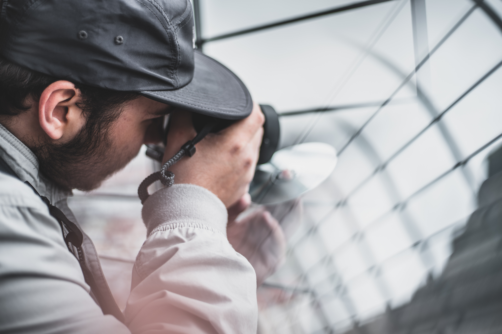

Photos

Professional Photography
As a Photographer, I let my photos speak for myself. Check them by yourselve and tell me what you think.
Designs

Graphic Design
Besides photography, graphic design is my second passion. Here are some of my favorite designs made by myself.
Writing

Personal Blog
Finally as my last outlet of creativity, I have a blog where I share my personal musings with the world.